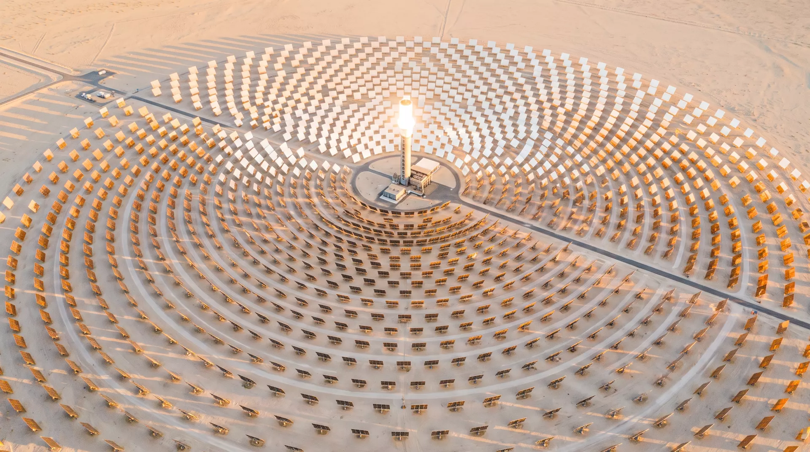

Ten thousand mirrors, one focal point, 1,050 °C on demand. HELIOS replaces industrial gas burners with sunlight — stored in salt, dispatched around the clock.
Each heliostat is a two-axis robot with a 12 m² mirror. It splits the angle between the sun and the tower, all day, to within 0.4 mrad.
The field concentrates 1,000 suns onto a ceramic receiver. Falling particles absorb the flux and leave the tower at 1,050 °C.
Hot particles bank sixteen hours of energy in a silo. Your process line draws steam, air, or salt at 3 AM if it wants to.
